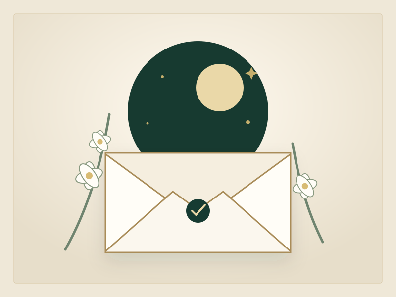

Where it began
The first hello
I did not know then how much that first moment would come to mean. I only knew there was something about you I wanted to keep discovering—the warmth in our first exchange, the ease I carried away, and the quiet hope that this would not be the last time our paths found one another.